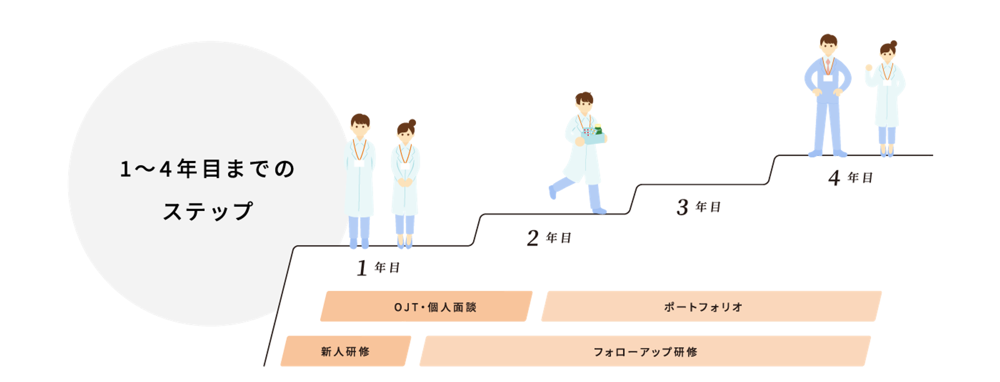
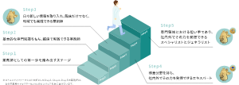
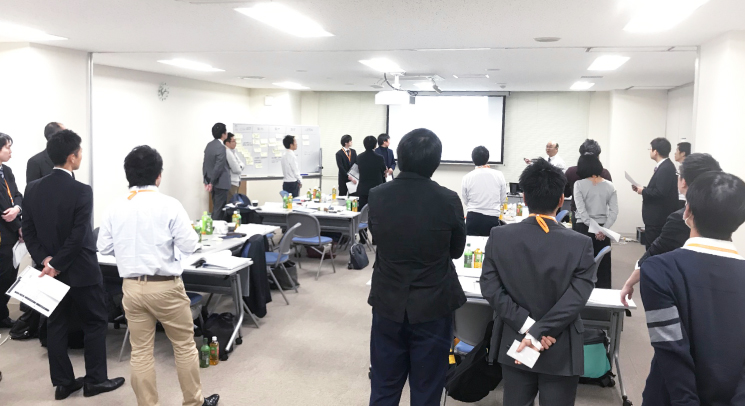
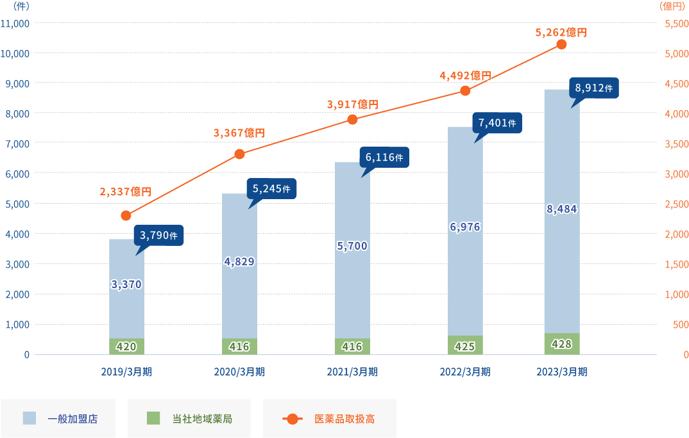

近年、薬剤師不足は地方では特に深刻化しています。
薬剤師の在り方が大きく変わろうとしている今、私たちは薬の専門家として医療を支え、そして、人々の日常生活や人生を支える「地域薬局」として、あるべき姿を追求しています。
良質な医療インフラを創造し生涯を見守る「まちのあかり」として地域の皆様の健やかな暮らしに貢献します。
そして患者様だけでなく、すべての薬剤師の人生を応援するなの花薬局の想いをお伝えします
01
「なりたい」を、叶える。
目標・人生に合わせて選べるキャリア
全国展開だからこそ、一人ひとりのキャリアプランに応えるフィールドがある。
薬剤師としてキャリアアップを目指すのは同じ。けれど、夢や目標、ライフスタイルは人それぞれ。
全国に運営会社を持つなの花薬局なら、様々なキャリプランに応えるフィールドが用意されています。
- ・自宅から通える住み慣れた土地で働きたい
- ・実家へ戻りUターン就職したい
- ・転勤せず今ある交友関係を続けながら仕事をしたい
勤務 エリア
全国35都道府県に440店舗以上のうち、通勤時間90分以内で通える範囲での店舗配属
CASE 1
●●●●●●●●●●●●●●●●●●●●●
- 1年目:薬剤師00
- 4年目:本部勤務(人事部採用セクション)
- 7年目:薬局長 広域勤務(エリア対象)
02
「のばせる」を、叶える。
成長をサポートする教育制度
●必須教育(1～4年目)
1年目から4年目は「新人研修」「フォローアップ研修」「OJT・個人面談」「ポートフォリオ」など継続的な研修で社会人・医療人として基礎スキルを身につけながら、さらに専門性を高める選択型薬剤師教育、マネジメント教育まで、興味のある分野を伸ばせる教育研修制度が整っています。

自分の「なりたい」に合わせて キャリアアップがのぞめる教育制度
●選択型薬剤師教育
「まちのあかり」として地域医療を支える薬剤師を育成するための教育制度です。【臨床】【研修】【研究】【資格】の4種類の実績を積み重ねて、ステップアップしていけます。

●マネジメント教育
店舗運営やエリアごとに店舗をまとめるブロック運営など、管理職としてのスキルを磨き、段階を踏んでキャリアアップが実現できる研修を設定しています。

03
「はたらきやすい」を、叶える。
選べるキャリアと充実の福利厚生があるから、長くはたらきやすい。
奨学金返済サポート
広域勤務（全国対象）を4年間勤務する場合、奨学金サポート制度として毎月10,000円の手当支給があります。
薬剤師都市就業支援手当
関東・近畿の対象地域（当社指定エリア）で一人暮らしをする薬剤師を対象に、入社後5年間、住宅補助が支給されます。
取得率100% 出産・育児をサポート
出産後原則1年まで育児休暇を取ることができます。休暇中にも会社から最新情報を自宅に郵送するなど、復職しやすいサポート体制も完備。
妊娠中の通院休暇・通勤緩和措置(1時間の勤務短縮又は時差出勤)や育児短時間勤務制度を活用する社員もいます。当社は、産休・育休の取得率だけでなく復帰率も大切にし、安心して長く働ける環境を整えています。
選択型福利厚生サービス
有名ホテルの特別価格優待や、全国のテーマパークや映画館のチケット割引だけでなく、個人のスタイルに合わせたフィットネスクラブ利用サービス、さらには育児補助金等の子育て支援などを、与えられたポイントの範囲内で自由に選んで利用できるサービスです。
- 従業員持株会
- 団体総合生活保険制度
- スポーツ・文化活動特別休暇
- JICAボランティア
- 医療貢献特別休暇
- 永年勤続特別休暇
- 保存休暇
- 夏季特別休暇
- 介護休業制度
- 勤続表彰
- 退職金
- 慶弔見舞金
休暇が取りやすく、ワークライフバランスを大切にできる
趣味がプロ野球観戦なのですが、12球団の本拠地すべてで現地観戦をしたいです。関東に本拠地がある5球団の球場は行ったことがありますが、遠征はまだ1回しか行ったことがありません。有休が取りやすい環境なので、有給や夏休みなどを活用して残りの6球団の球場へも旅行も兼ねて行きたいと思っています。
（2019年入社）
04
「なかま」を、叶える。
新入社員アンケートで約8割が、入社の理由を「薬局の雰囲気の良さ」と回答。薬剤師の平均年齢が36歳と経験豊富な中堅・ベテラン社員が多い中で、先輩の後押しを受けながら活躍できるあたたかい環境があります。
スポーツをはじめ様々な活動に対し、自主的に立ち上げたサークルを公認サークルとして認定、奨励金を支給する制度です。全国のグループ社員間のコミュニケーション向上とワークライフバランスの観点から推進しています。
1人1台支給のタブレット端末を使用したオンライン研修で、全国に点在する新入社員たちとグループワークをしたり、交流を深めます。日々の業務で悩んだことは、上司や店舗のスタッフだけでなく、全国の同期社員とアドバイスをし合ったり、仲良くなった同期とは休日に遊んだりと、広いコミュニケーションを取ることができます。
数字で見るなの花薬局
434薬局、1ケアプランセンター、10コスメ・ドラッグストア、
3訪問看護ステーション（2023年9月30日現在）
なの花薬局は地域密着型薬局。自宅や故郷の実家から通える店舗に配属が叶います。
地域密着型店舗割合
73%
店舗形態：マンツーマン／医療モール（2022年9月現在）
地域医療に不可欠となる医師との連携を必要とするほか、地域の皆様の健康に関する情報拠点としての機能を担います。患者様一人ひとりの体調の変化や希望に沿って寄り添うことで、信頼を得ることにやりがいを感じられます。
地域密着型店舗割合
36歳%
2022年9月現在
なの花薬局自体も1999年設立、20年弱のフレッシュな会社です。30歳にして薬局長など、若い社員の活躍が目立ちます。若い会社だからこそトップダウンではなく、新入社員の意見も言いやすい環境であるといえます。
直近の新卒離職率
6.2%
2020年〜2022年 新入社員離職率
OJT、上司との個人面談など細やかなフォローで業務時の悩み、相談に応えます。また新人研修で仲を深めた同期とのコミュニケーションも日々のリフレッシュとなるようです。
産休・育休取得後の復帰率
98%
2019年10月～2022年9月
実際に、2度の産休育休を取得しながら認定薬剤師を取得し時短で働く薬局長の女性社員も在籍。潜在薬剤師となってしまわないよう、休暇取得だけでなく復帰も全力でサポートします。
調剤チェーン企業調剤報酬額ランキング
第7位%
「ドラッグマガジン2022年医薬品産業ランキング」より
取り扱い処方箋枚数は年間908万枚（2023年3月期実績）、連結売上高は1,095億円（2023年3月期実績）、医薬品発注取扱高は5,262億円（2023年3月期実績）と右肩上がりを記録しています。

年収全国平均対比
110%
XXXX年
この文章はダミーです。文字の大きさ、量、字間、行間等を確認するために入れています。この文章はダミーです。文字の大きさ、量、字間、行間等を確認するために入れています。
よくある質問
自宅通勤勤務（原則、自宅から通える範囲での勤務を希望される方）の場合は、エリアを越えての強制的な転勤はありません。ただし、結婚のタイミングや、他の地域でも活躍したいなど、本人が希望した場合はエリアを変更して勤務することができます。
他社と迷われている方へ
人生の分岐点となる就職活動において、慌てて出した答えほどもったいないものはありません。
私たちは皆様がじっくりと考えて出された結論を尊重します。検討のため、LINEでの質問や、面談形式でお話しすることも可能です。ぜひご相談ください。
優秀な薬剤師ほど就職先に困ることはありません。選択肢があることは、あなたがそれだけ優秀な薬学生である何よりの証拠です。
ただ、そうした優秀な方だからこそ間違った選択をしてほしくないと考え、会社選びのポイントをお伝えします。
多くの経験を積めるかどうか
この文章はダミーです。文字の大きさ、量、字間、行間等を確認するために入れています。この文章はダミーです。文字の大きさ、量、字間、行間等を確認するために入れています。この文章はダミーです。文字の大きさ、量、字間、行間等を確認するために入れています。
将来を見据えたキャリアプランを考えているか
この文章はダミーです。文字の大きさ、量、字間、行間等を確認するために入れています。この文章はダミーです。文字の大きさ、量、字間、行間等を確認するために入れています。この文章はダミーです。文字の大きさ、量、字間、行間等を確認するために入れています。
社会貢献性はあるか
この文章はダミーです。文字の大きさ、量、字間、行間等を確認するために入れています。この文章はダミーです。文字の大きさ、量、字間、行間等を確認するために入れています。この文章はダミーです。文字の大きさ、量、字間、行間等を確認するために入れています。
社会貢献性はあるか
この文章はダミーです。文字の大きさ、量、字間、行間等を確認するために入れています。この文章はダミーです。文字の大きさ、量、字間、行間等を確認するために入れています。この文章はダミーです。文字の大きさ、量、字間、行間等を確認するために入れています。
エントリーはこちらから！
LINEマイページからエントリー
マイナビからエントリー
薬キャリからエントリー

© MEDICAL SYSTEM NETWORK Co., Ltd. All Rights Reserved


全国転勤で趣味も充実